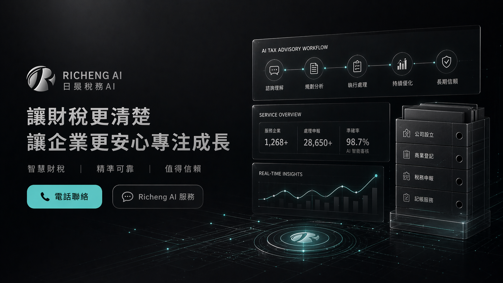

Richeng AI
Richeng Certified Tax Accountants Firm
Richeng Accounting Firm.
https://www.richeng.com.tw

完整版
首頁仍保留完整 50 題，這一頁則是最常被問的主題總覽。
05 / 最常問
最容易先卡住的 12 題
如果你正在比較服務、猶豫要填哪張表單，先看這一頁通常就能解答大部分疑問。
1. 你們主要做哪些服務？
我們主要提供公司設立、商業登記、稅務服務、記帳服務、企業諮商與其他專業協作。目標不是只做單一項目，而是把財稅流程做得更清楚、更穩定。
2. 如果我不知道要填哪張表單怎麼辦？
可以先選最接近的那一張，或直接聯絡我們。我們會幫你判斷最合適的入口，不需要第一次就完全選對。
3. 你們有做公司設立嗎？
有，公司設立是我們最常見的服務之一。從規劃、資料整理到申辦流程，我們都可以協助你把方向先理清楚。
4. 你們可以協助變更登記嗎？
可以，包含公司變更與商業變更都能協助。變更常常牽涉到文件一致性與時程安排，我們會幫你一起確認。
5. 記帳服務是長期合作嗎？
多數情況下是長期合作，也可以依企業需求安排單一服務。重點是讓帳務更清楚，後續更容易追蹤與管理。
6. 稅務諮詢可以先單獨做嗎？
可以，若你只是想先了解方向，稅務諮詢表就是很好的起點。先把問題整理清楚，再開始處理通常會更有效率。
7. 你們的合作方式會很制式嗎？
不會，我們會依你的情況整理成適合的合作方式，而不是只給固定模板。不同產業、不同階段，需要的安排不會完全相同。
8. AI 在你們的服務裡扮演什麼角色？
AI 主要用在流程整理、資訊歸納與協作輔助，讓我們更快看懂需求、更快整理資料，但最終仍由專業判斷把關。
9. 客戶看得懂流程嗎？
會，我們會用盡量清楚的方式說明步驟，避免專業術語太多。好的服務應該是讓人看得懂，而不是更困惑。
10. 你們有提供快速處理嗎？
如果案件較急，我們會先評估可行性，再安排處理順序。急件的重點不是盲目加快，而是先把最重要的部分處理好。
11. 我可以先只做單一項目嗎？
可以，你不一定要一次把所有事情都交給我們。若你只需要單一服務，也能依需求單獨安排。
12. 哪裡可以看完整 50 題？
首頁有完整的 50 題 FAQ 可展開查看。這一頁是精簡版總覽，方便你先快速了解最常見的問題。
06 / 仍不確定？
直接從表單或聯絡入口開始
如果 FAQ 還沒有回答到你的情況，下一步最有效的方式就是直接送出表單或聯絡我們。